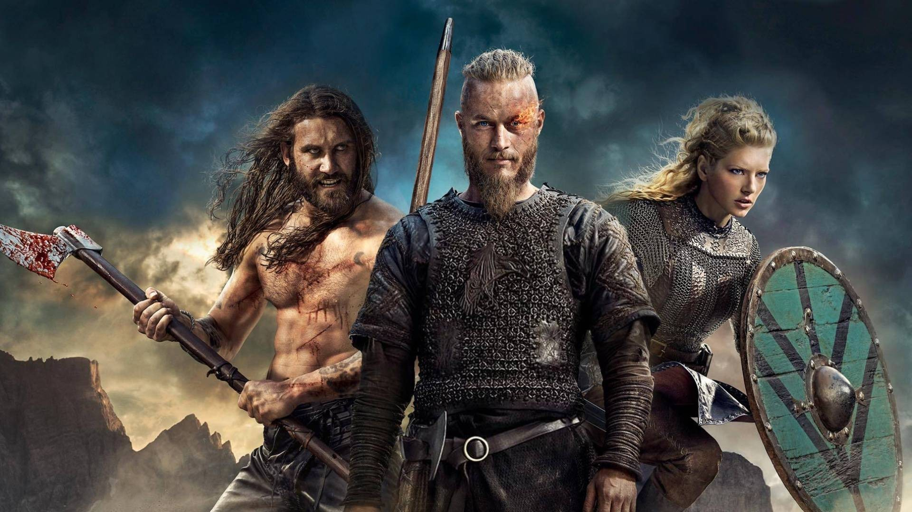
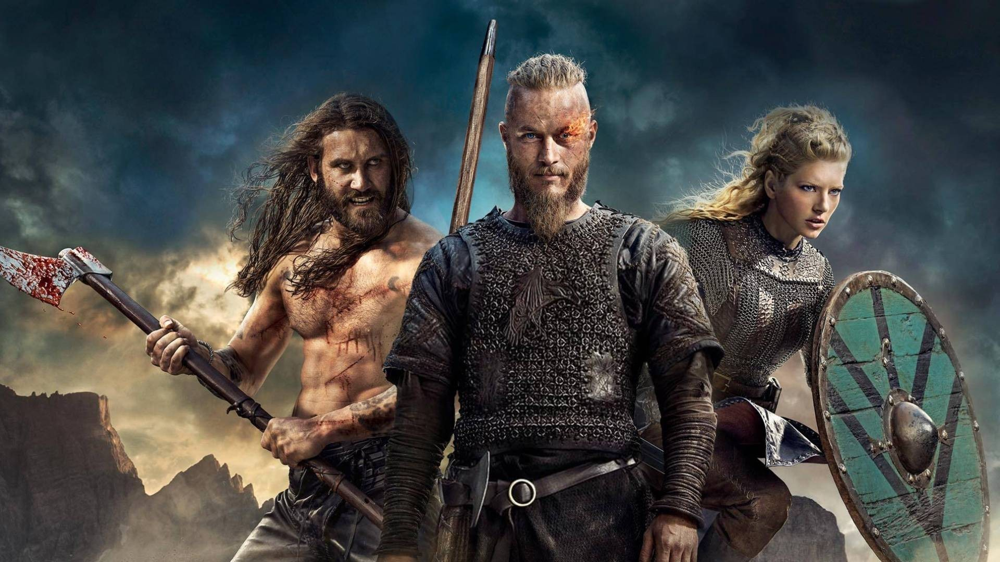

Vikings segue a vida de Ragnar Lothbrok, o maior guerreiro da sua era. Lider de seu bando, com seus irmãos e sua família, ele ascende ao poder e torna-se Rei da tribo dos vikings. Além de guerreiro implacável, Ragnar segue as tradições nórdicas e é devoto dos deuses. As lendas contam que ele descende diretamente de Odin, o deus da guerra.
Canção Trailer